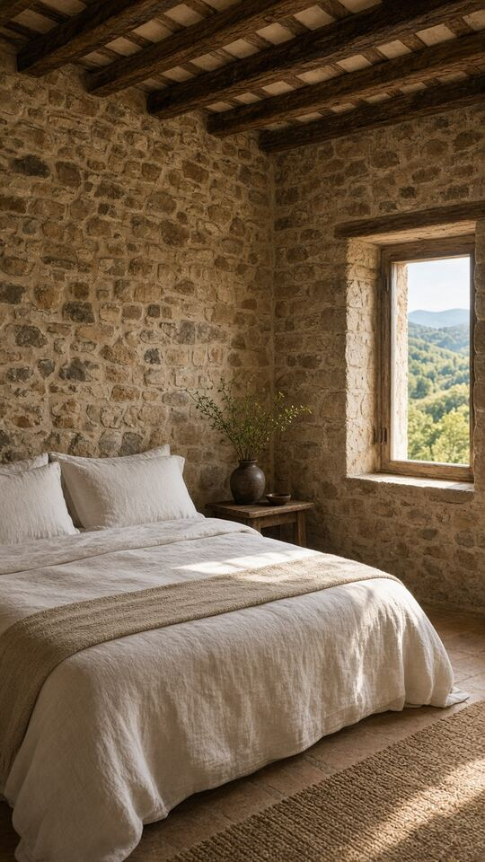

Le début des cerises
Les premières récoltes arrivent généralement à cette période. Vos photographies de printemps peuvent ouvrir un sujet de séjour, sans promettre que les fruits servis viennent de votre propre jardin.
Céret · Gîtes et chambres d'hôtes
À Céret, un séjour peut mêler une exposition, un marché et le plaisir de retrouver sa chambre. Votre maison a sa propre place dans cette envie. Rushless transforme ses images en une courte présentation qui montre l'accueil avant de demander une réservation. Vous partagez vos vidéos, photos et contenus existants ; nous cherchons la progression qui donne une impression juste du lieu et de ses détails.

Vos vidéos, photos et contenus existants. Rien à tourner pour commencer.
Motion design sur mesure · Format vertical 9:16
Pensés pour le scroll.
Prêts pour vos réseaux.
Le bon lieu. Le bon moment.
L'identité de Céret permet d'écrire des invitations différentes selon la période. Nous utilisons ces repères pour situer votre maison, sans inventer un programme ou une prestation autour de votre hébergement.
Les premières récoltes arrivent généralement à cette période. Vos photographies de printemps peuvent ouvrir un sujet de séjour, sans promettre que les fruits servis viennent de votre propre jardin.
Le marché participe à la vie de Céret. Évoquez l'occasion de découvrir la ville en gardant distincts les repas, les achats ou les accompagnements effectivement proposés par votre maison.
Le musée d'art moderne est un repère culturel de la ville. Un reel peut situer votre hébergement dans cet environnement, sans annoncer de billet ou de partenariat avec le musée.
La féria fait partie des rendez-vous estivaux. Présentez vos espaces et votre façon de recevoir pendant cette saison, sans suggérer un calme permanent ou une proximité immédiate que l'adresse ne garantit pas.
Ce qu'on peut faire bouger pour vous
Les petites attentions gagnent à être vues.
Vos photos permettent de choisir une ouverture douce et de montrer les volumes. Les teintes restent fidèles aux images pour que la découverte sur place corresponde à la première impression.
Si ces espaces existent dans votre hébergement, reliez-les à l'accueil que vous proposez. Aucun équipement ni service de restauration n'est ajouté pour remplir un écran de la vidéo.
Une publication peut évoquer l'art à Céret puis revenir à votre maison. Le montage sépare clairement le contexte de ville des prestations comprises dans le séjour que vous présentez.
Quelques mots sur votre manière de recevoir peuvent conclure le récit. Vous choisissez le canal de contact et les renseignements à confirmer avant qu'un voyageur organise sa venue.
Le mouvement change la lecture.
Aucun hébergement cérétan ne figure sur cette image générée par IA. Elle sert à montrer une composition verticale et une manière de faire respirer les détails, sans proposer de chambre réelle. Un exemple de reel propre à cette niche est prévu prochainement. Votre version accueillera vos vidéos, images de la maison et précisions sur les services que vous proposez effectivement dans le Vallespir.
Aperçu du format · Exemple de reel de votre niche bientôt disponible.
Et si c'était votre marque ?Simple pour vous. Précis pour nous.
Vos vidéos, photos, captures d’écran, produits, menus ou annonces. On compose avec les contenus que votre entreprise possède déjà.
Vous découvrez un premier reel à votre image. Un exemple concret pour juger le ton, le rythme et la lisibilité.
Nous ajustons les contenus avec vous. Les formats verticaux 9:16 sont livrés prêts pour vos réseaux.
Deux façons de travailler
Clés en main
Nous montons vos vidéos, photos et contenus existants : site, réseaux, annonces, produits, menus ou captures d’écran.
Signature
Vos vidéos, photos et autres médias enrichissent le récit. Le clone de votre voix est possible uniquement avec votre consentement explicite préalable.
Du motion design sur mesure, des textes toujours lisibles et chaque reel vérifié par un humain. Les générateurs automatiques ne décident pas de votre message. Rushless est une agence vidéo basée à Ille-sur-Têt, pour des clients partout en France. Les échanges et les livraisons se font à distance.
On vous répond.
Gîtes et chambres d'hôtes · Céret
Le printemps cérétan constitue un contexte éditorial pertinent. Nous pouvons l'évoquer sans annoncer de cueillette, de fruit servi ou d'événement compris dans la réservation. Les images du petit déjeuner et les promesses d'accueil restent liées à ce que vous proposez réellement.
La commune exacte reste visible dans le reel et sur la destination de contact. Céret peut être un repère pour situer le séjour, mais ne remplace pas votre adresse. Nous évitons de laisser entendre que le musée ou le marché se trouve à quelques pas.
Votre maison et les attentions photographiées peuvent porter le récit. Une voix générique est possible, tout comme un contenu sans voix. Si vous choisissez votre voix en Signature, son clonage se prépare uniquement après votre consentement explicite et avec les éléments adaptés.
Le plus simple, c'est de voir.
Partagez votre hébergement du Vallespir et ce que vous aimez y faire vivre. Le premier exemple donnera une forme courte et chaleureuse à cette intention.